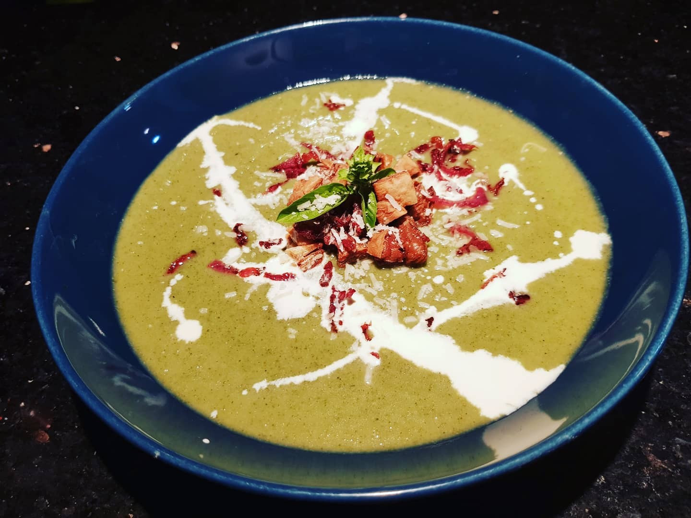
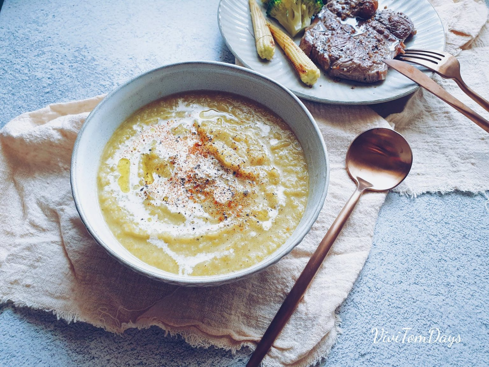
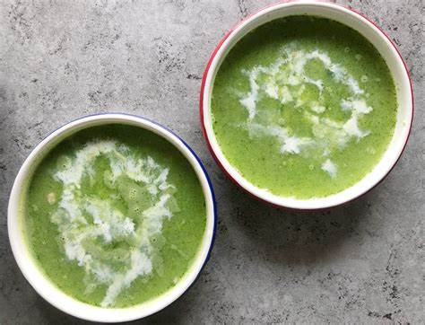

準備一個湯鍋，鍋底加入一點點橄欖油和一塊奶油，開中小火將洋蔥和大蒜炒軟。這時候可以放一點鹽和胡椒，幫助洋蔥出水。
放入切細的綠色蔬菜炒軟。
放入切小塊的花椰菜。
倒入高湯開中火煮滾約10分鐘。煮到花椰菜軟化。
用食物調理機或調理棒打成濃稠狀。
開小火慢慢煮到微滾，這時候用帕瑪森起司和鹽調味，用水調濃稠度，就完成啦。
上桌的時候可以灑寫烤脆的麵包塊，煎脆的培根碎削，再用鮮奶油畫出裝飾，做成吃不起的樣子，就更誘人啦。
  
檸檬胡椒蝦介紹 韓式涼拌山茼蒿介紹 香菇麻油雞飯介紹 心得
練習 影片 音樂
Your browser does not support the audio element. Your browser does not support the video tag.